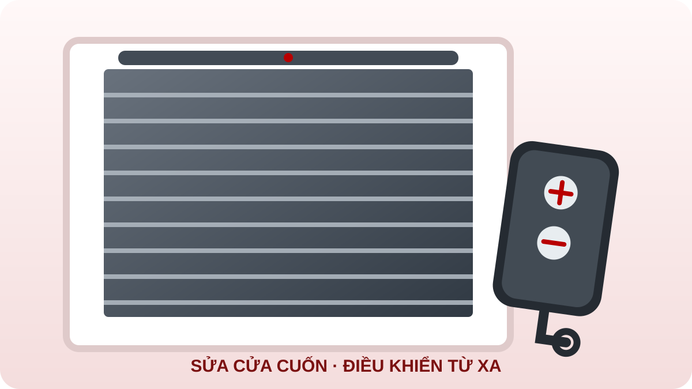

Remote cửa cuốn không nhận tín hiệu tại Cẩm Phả

Remote cửa cuốn bấm không chạy, đèn báo vẫn sáng hoặc phải đứng thật gần cửa mới nhận tín hiệu là những biểu hiện thường gặp. Nguyên nhân có thể nằm ở pin, nút bấm, remote, bộ nhận tín hiệu hoặc nguồn điện của hệ thống. Không nên vội kết luận phải thay toàn bộ thiết bị khi chưa kiểm tra.
Những dấu hiệu và nguyên nhân có thể gặp
- Bấm remote không thấy đèn báo: pin có thể yếu, lắp sai cực hoặc remote bị hỏng.
- Đèn remote sáng nhưng cửa không phản hồi: tín hiệu có thể không tới bộ nhận hoặc bộ điều khiển đang gặp trục trặc.
- Chỉ một remote không dùng được: cần kiểm tra riêng chiếc remote đó và tình trạng đồng bộ.
- Nhiều remote cùng không hoạt động: nên kiểm tra nguồn cấp và hệ thống nhận lệnh; không tự tháo hộp điện.
- Lúc được lúc không: có thể do pin yếu, nút bấm tiếp xúc kém hoặc tín hiệu bị ảnh hưởng bởi vị trí và môi trường.
Các bước kiểm tra an toàn tại nhà
- Quan sát đèn báo trên remote khi bấm nút. Nếu đèn yếu hoặc không sáng, kiểm tra pin đúng chủng loại và lắp đúng cực.
- Thử remote dự phòng nếu gia đình có. Ghi nhận một chiếc hay tất cả remote đều gặp lỗi.
- Đứng ở vị trí thông thoáng, trong phạm vi sử dụng thông thường rồi thử lại; không bấm liên tục nhiều lần.
- Quan sát xem cửa có nguồn điện và có dấu hiệu bất thường như tiếng kêu, rung hoặc kẹt cơ khí không. Nếu có, dừng sử dụng.
- Ghi lại model remote hoặc chụp ảnh thiết bị bên ngoài để cung cấp cho người kỹ thuật.
Lưu ý: Không tự đấu tắt dây, chập chân tiếp điểm, mở hộp điều khiển hoặc can thiệp vào mạch điện. Nếu cửa đang kẹt, nghiêng, phát tiếng động lạ hoặc có nguy cơ rơi, hãy giữ người và phương tiện tránh xa khu vực cửa.
Khi nào nên gọi thợ kiểm tra?
Nên liên hệ kỹ thuật khi đã kiểm tra pin nhưng remote vẫn không hoạt động, nhiều remote cùng mất tín hiệu, cần đăng ký remote mới hoặc cửa có dấu hiệu lỗi motor và bộ nhận. Việc kiểm tra cần xác định đúng loại bộ điều khiển và quyền quản lý hợp lệ của chủ nhà/cơ sở.
Thông tin nên chuẩn bị khi liên hệ
- Địa chỉ tại Cẩm Phả hoặc khu vực lân cận.
- Loại cửa và số lượng remote đang sử dụng.
- Biểu hiện cụ thể: không sáng đèn, sáng đèn nhưng cửa không chạy, hay lúc nhận lúc không.
- Ảnh mặt ngoài remote hoặc tem model nếu có thể chụp an toàn.
Gọi trước để trao đổi tình trạng, xác nhận khả năng hỗ trợ, lịch làm việc và chi phí dự kiến trước khi thực hiện.
Câu hỏi thường gặp
Remote cửa cuốn sáng đèn nhưng cửa không chạy là bị gì?
Có thể remote vẫn có nguồn nhưng tín hiệu không tới bộ nhận, remote chưa đồng bộ hoặc hệ thống điều khiển đang gặp lỗi. Cần kiểm tra theo đúng loại thiết bị.
Có nên tự cài lại remote cửa cuốn không?
Chỉ thực hiện theo hướng dẫn chính hãng khi bạn có quyền quản lý hệ thống và hiểu rõ quy trình. Không tự chập dây hoặc mở hộp điện.
Khi gọi thợ cần cung cấp thông tin gì?
Cho biết loại cửa, biểu hiện lỗi, số lượng remote bị ảnh hưởng và địa chỉ cần hỗ trợ. Có thể gửi ảnh remote hoặc tem model nếu chụp được an toàn.